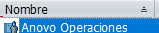
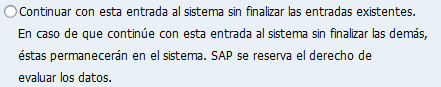
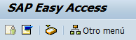

load("mssql-jdbc-7.0.0.jre8.jar")
from com.ziclix.python.sql import zxJDBC
from datetime import datetime
import sys
import os
import glob
print("INICIO RPA")
###VARIABLES###
conn = None
d, u, p, v = "jdbc:sqlserver://10.120.15.105", "ENVIRONMENT_DEV", "@env-DEV-2015$*", "com.microsoft.sqlserver.jdbc.SQLServerDriver"
user_sap = ("RPA_SAP")
pass_sap = ("Anovo2020##")
folder = "C:\Temp"
ultimacarga = False
###VALIDAR ULTIMA CARGA###
for the_file in os.listdir(folder):
file_path = os.path.join(folder, the_file)
if file_path == "C:\Temp\CARGA OK.txt":
ultimacarga = True
print(ultimacarga)
if ultimacarga == True:
print("Todo Correcto, INICIAR")
print("Cerrar procesos")
os.system('taskkill /f /im saplogon.exe')
print("abrir sap")
App.open("C:\\Program Files (x86)\\SAP\\FrontEnd\\SAPgui\\saplogon.exe")
sleep(2)
wait(,120)
sleep(5)
doubleClick(Pattern().targetOffset(-1,12))
print("ingresar usuario")
sleep(3)
wait(Pattern().similar(0.80),120)
sleep(3)
paste(user_sap)
sleep(2)
type(Key.TAB)
sleep(2)
paste(pass_sap)
sleep(2)
type(Key.ENTER)
sleep(5)
if exists(,10):
click(Pattern().targetOffset(-210,-32))
click(Pattern().targetOffset(-12,1))
sleep(10)
if exists(,10):
sleep(2)
click()
sleep(10)
print("buscar ruta")
wait(Pattern().similar(0.80),120)
sleep(2)
type(Pattern( ).targetOffset(21,1),"ZMVT_NS_PE")
sleep(2)
type(Key.ENTER)
try:
conn = zxJDBC.connect(d, u, p, v)
cursor = conn.cursor()
cursor.execute("use RUTINAS_DEV exec ObtenerOCpendientesPagoAutomatico")
print("conectado")
for x in cursor.fetchall():
print(x)
else:
print("FIN RPA")
archi1=open("C:\Rutinas\CARGA OK.txt","w")
archi1.close()
except:
exc_type, exc_val, exc_tb = sys.exc_info()
ErrorText = "***** ERROR IN SCRIPTNAME = " + sys.argv[0] + " *****\n"
ErrorText += "Date/Time : " + str(datetime.now()) + "\n"
ErrorText += "Line Number: " + str(exc_tb.tb_lineno) + "\n"
ErrorText += "Error Type : " + exc_type.__name__ + "\n"
ErrorText += "Error Value: " + exc_val.message + "\n"
ErrorText += "***************************************************************\n\r"
print ErrorText
conn.close()
print("ERROR, conexion cerrada")
finally:
conn.close()
print("conexion cerrada")
else:
print("ERROR CON LA ULTIMA EJECUCION")
print("MEY DEY, MEY DEY")
).targetOffset(21,1),"ZMVT_NS_PE")
sleep(2)
type(Key.ENTER)
try:
conn = zxJDBC.connect(d, u, p, v)
cursor = conn.cursor()
cursor.execute("use RUTINAS_DEV exec ObtenerOCpendientesPagoAutomatico")
print("conectado")
for x in cursor.fetchall():
print(x)
else:
print("FIN RPA")
archi1=open("C:\Rutinas\CARGA OK.txt","w")
archi1.close()
except:
exc_type, exc_val, exc_tb = sys.exc_info()
ErrorText = "***** ERROR IN SCRIPTNAME = " + sys.argv[0] + " *****\n"
ErrorText += "Date/Time : " + str(datetime.now()) + "\n"
ErrorText += "Line Number: " + str(exc_tb.tb_lineno) + "\n"
ErrorText += "Error Type : " + exc_type.__name__ + "\n"
ErrorText += "Error Value: " + exc_val.message + "\n"
ErrorText += "***************************************************************\n\r"
print ErrorText
conn.close()
print("ERROR, conexion cerrada")
finally:
conn.close()
print("conexion cerrada")
else:
print("ERROR CON LA ULTIMA EJECUCION")
print("MEY DEY, MEY DEY")